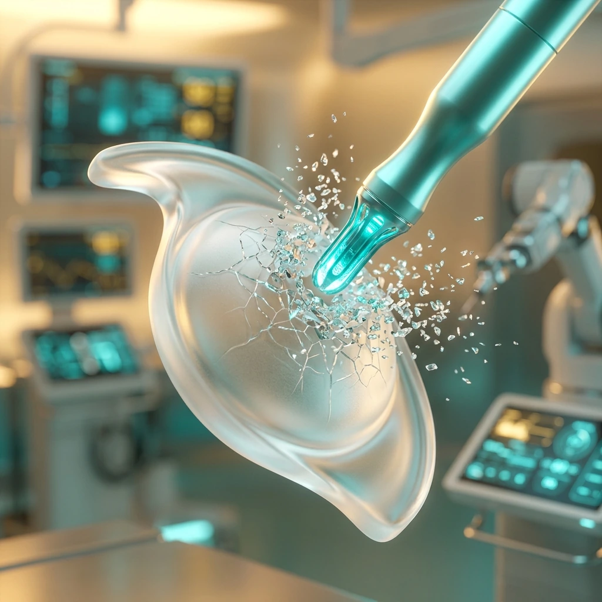

Cataract Surgery in 2025: Everything You Need to Know About Painless Phaco & Premium IOLs
Every week at my OPD, I meet patients — from Meerut, Hapur, Modinagar, and across West UP — who have been putting off cataract surgery for months, sometimes years. The reasons are almost always the same: fear of pain, fear of a large incision, uncertainty about glasses after surgery, or simply not knowing what to expect. If you or a family member is in that situation, this article is written for you. Let me walk you through everything — in plain language — so you can make a confident, informed decision.

What Is a Cataract and How Does It Develop?
The lens of your eye sits just behind the pupil. In a young, healthy eye it is crystal clear, allowing light to focus sharply on the retina. A cataract is simply the clouding of this natural lens. It is not a growth, not a film on the surface of the eye, and not contagious — it is a structural change within the lens protein itself, and it progresses gradually over months to years.
Cataracts are broadly classified into three types based on where the clouding begins:
- Nuclear cataract: The most common type, affecting the centre (nucleus) of the lens. It typically causes progressive blurring of distance vision and, in early stages, may paradoxically improve near vision — a phenomenon called "second sight." The lens often takes on a yellow or brown tint, affecting colour perception and contrast.
- Cortical cataract: Affects the outer layers (cortex) of the lens, creating spoke-like whitish streaks that radiate inward toward the centre. Patients notice significant glare and difficulty driving at night, as oncoming headlights scatter through these opacities.
- Posterior Subcapsular Cataract (PSC): Forms at the very back surface of the lens, just inside its capsule, and tends to progress faster than other types. It is strongly associated with prolonged steroid use — including inhaled steroids, eye drops, and oral medications — as well as diabetes. Even small PSC opacities can severely impair reading vision and cause blinding glare in bright sunlight or artificial light.
Risk factors include advancing age (the single largest contributor), uncontrolled diabetes, prolonged UV exposure without sunglasses, high myopia, previous eye trauma, and certain systemic medications. In India, cataracts tend to present a full decade earlier than in Western populations — partly due to greater UV exposure, nutritional factors, and higher rates of diabetes. This means patients in their fifties, and sometimes even forties, may already have functionally significant cataracts.
When Should You Consider Surgery?
This is one of the most common questions I hear. The honest answer is: when the cataract meaningfully affects your quality of life. There are no eye drops, tablets, dietary supplements, or exercises that can reverse or slow a cataract once it has formed. Surgery is the only effective treatment — and it is one of the safest, most successful procedures in all of medicine.
From a clinical standpoint, we generally recommend surgery when best-corrected visual acuity falls below 6/18 in the affected eye, or earlier when occupational or lifestyle demands require better vision. Dense PSC cataracts that cause functional disability despite relatively preserved overall acuity also warrant early intervention. On the other end, waiting too long — allowing a cataract to become hypermature — actually makes surgery technically more demanding and very slightly riskier, because the liquefied lens matter can leak and cause inflammation. The ideal time is when your daily life — reading the newspaper, recognising faces across the room, driving safely, performing your work — is being compromised.
Modern Cataract Surgery: How MICS Phaco Works, Step by Step
The technique performed at Haripriya Eye Care Centre is called Micro-Incision Cataract Surgery (MICS) using phacoemulsification — phaco for short. It bears almost no resemblance to the large-incision surgery of twenty or thirty years ago that many older patients still fear. Here is exactly what happens:
- Topical anaesthesia: We use anaesthetic eye drops alone — no injections around or behind the eye, and no general anaesthesia in the vast majority of cases. You are awake and comfortable throughout. The eye is completely numb; you may perceive light and gentle movement but feel no pain at all.
- A 2.2 mm incision: A tiny, self-sealing tunnel incision is made at the clear periphery of the cornea — the clear front surface of the eye. No stitches are required because the geometry of this wound causes it to seal naturally once intraocular pressure is restored.
- Capsulorhexis: A precise, circular opening is made in the thin front membrane (anterior capsule) of the lens. This is the most technically demanding step and is where surgical experience truly matters.
- Ultrasound emulsification: A slim titanium probe vibrating at ultrasonic frequency is inserted through the 2.2 mm incision. This probe breaks the cloudy lens into microscopic fragments, which are simultaneously aspirated out through the same handpiece. The clear capsular bag that housed the lens is left entirely intact.
- IOL implantation: The replacement intraocular lens (IOL) — a foldable, biocompatible lens — is loaded into a sterile injector and delivered through the same tiny incision. It unfolds gently inside the eye and positions itself in the capsular bag, exactly where your natural lens was.
- Self-sealing closure: The incision seals on its own within moments. No sutures, no eye pad in most cases, and no hospitalisation required. The entire surgical procedure takes 10 to 15 minutes per eye.
Choosing the Right IOL: Your Most Important Decision
The choice of intraocular lens is arguably the most consequential decision in modern cataract surgery — and it should be tailored to your individual lifestyle, visual demands, and ocular anatomy. Here is what each category offers:
- Monofocal IOL: The most widely used lens across India. It corrects vision at one distance — almost always set for distance. You will still need reading glasses for near tasks such as reading, using a mobile phone, or sewing. It offers excellent optical quality, superb durability, and the most affordable cost. For patients with active retinal disease or other conditions limiting potential vision, a monofocal is often the safest and most sensible choice.
- Multifocal IOL: Engineered with concentric diffractive or refractive zones that distribute incoming light to both far and near focal points simultaneously. The majority of patients implanted with a quality multifocal lens can read a book, browse their phone, and drive without spectacles. They perform best in patients with healthy retinas, good tear film, no significant corneal irregularity, and realistic expectations — some patients may notice halos around lights at night, which usually diminish over 3 to 6 months as the brain neuroadapts.
- Extended Depth of Focus (EDOF) IOL: A newer category that elongates the range of sharp vision continuously — rather than splitting it into two distinct zones — providing excellent intermediate vision (the computer and dashboard distance) and very good distance, with fewer optical disturbances than standard multifocals. EDOF lenses are particularly well-suited to professionals, office workers, and anyone who spends significant time at intermediate distances.
- Toric IOL: Designed specifically for patients with significant corneal astigmatism — an irregular curvature of the cornea that causes blur at all distances and cannot be corrected by a spherical IOL alone. A toric lens incorporates an additional cylindrical correction aligned precisely to counteract the corneal astigmatism. Toric technology can be combined with monofocal, multifocal, or EDOF platforms to give patients both astigmatism correction and their preferred focal range.
During your pre-operative consultation at Haripriya, I perform detailed corneal topography, optical biometry (IOL power calculation using the latest formulae), specular microscopy to assess corneal health, and a full retinal evaluation to determine which lens type will deliver the best results for you specifically. A farmer from Mawana who works outdoors all day and a software engineer commuting from Meerut to Noida have very different visual priorities — and their IOL choice should reflect that.
Why Patients from West UP Choose Haripriya Eye Care
I completed my cornea and anterior segment training at two of India's most respected institutions: Sankara Nethralaya in Chennai — a globally recognised centre for corneal surgery and complex anterior segment disease — and the Aravind Eye Care System in Madurai, which is among the highest-volume, highest-quality eye care institutions in the world. That training shaped not just my surgical technique, but my approach to patient assessment, pre-operative planning, and managing unexpected intraoperative findings with calm and precision.
At Haripriya Eye Care Centre in Meerut, we have a dedicated modular operation theatre built to the sterility standards required for intraocular surgery, with HEPA filtration and a full instrument sterilisation chain. Our phaco platform and IOL inventory are maintained at current standards. But more than equipment, what patients consistently tell me they value most is that I personally review every pre-operative assessment, explain IOL options without rushing the conversation, perform the surgery myself, and am available for follow-up. For a region like West UP — where Meerut serves as a referral hub for Hapur, Baghpat, Muzaffarnagar, Ghaziabad, and Bulandshahr — having a trained cornea surgeon available for complex cases (dense white cataracts, post-traumatic cataracts, small pupil syndromes, combined cataract-glaucoma procedures, patients on blood thinners for heart conditions) makes a meaningful difference in outcomes.
What to Expect: Before, During, and After Surgery
Pre-operative assessment: You will attend a dedicated pre-op visit where we dilate the pupils, perform A-scan biometry to calculate your precise IOL power, check corneal endothelial cell count with specular microscopy, examine the retina thoroughly, and review your systemic health and current medications. If you are on blood thinners for a heart condition, we coordinate with your cardiologist — which is seamless at Haripriya, given that our cardiac team is under the same roof.
Day of surgery: Dilating and anaesthetic drops are instilled in a staged protocol starting 30 to 45 minutes before the procedure. The surgery itself is 10 to 15 minutes. You will rest comfortably in our recovery area for a short time, then be discharged with your companion. No hospitalisation, no general anaesthesia recovery.
Recovery: Most patients are genuinely surprised by how quickly they notice improvement — a brighter, clearer world often within the first 24 hours, as the world emerges from the yellowish, cloudy fog of the cataract. Light daily activities can resume in 1 to 2 days. Office or desk work can usually resume in 2 to 3 days. We ask patients to avoid rubbing the eye, splashing water into it, and heavy lifting or straining for two weeks. Post-operative antibiotic and anti-inflammatory drops are prescribed for 4 to 6 weeks and are an important part of healing — please do not skip or reduce them without consulting us.
Frequently Asked Questions
Is cataract surgery painful?
No — and this is the question I am asked most often, almost always by patients who have been told old stories about large needles and painful recoveries. With topical anaesthetic drops, the eye is fully numb throughout the procedure. You may sense pressure or gentle movement, but you will not feel pain. After surgery, a day or two of mild grittiness, watering, or light sensitivity is completely normal and easily managed with prescribed drops. The fear of pain is the most common reason patients delay surgery — and it is almost never justified with modern phacoemulsification technique.
How long does the surgery take?
The surgical procedure itself takes approximately 10 to 15 minutes per eye in uncomplicated cases. When you factor in preparation, pupil dilation, anaesthetic drops, and a brief rest in the recovery area before discharge, plan for about 2 to 3 hours at the centre in total. There is no general anaesthesia, no overnight stay, and no stitches to come back and remove. Most patients are at home the same morning or afternoon.
Will I need glasses after surgery?
This depends on the IOL you and I select together. With a standard monofocal IOL set for distance vision, you will likely still need reading glasses for close work. With a premium multifocal or EDOF IOL, the majority of patients manage their day-to-day activities — driving, cooking, reading, using a mobile phone — without spectacles, though a thin pair may occasionally help for very prolonged or very fine reading. We discuss these realistic expectations in detail during consultation so there are no surprises. The goal is always to give you the best possible functional vision for your lifestyle.
What is the cost of cataract surgery in Meerut?
The cost varies based primarily on the IOL selected. A micro-incision phaco procedure with a standard monofocal IOL is significantly more affordable than a package with a premium multifocal or toric IOL. At Haripriya, we believe quality surgery should be accessible — we offer transparent, itemised pricing with no hidden costs, and we are happy to discuss options that balance your visual goals with your budget. Many patients find that a premium IOL package is economical over a lifetime when you factor in reduced dependence on spectacles. Please call or WhatsApp us for current pricing, as it can vary with IOL model and platform.
Can both eyes be done together?
In the large majority of cases, we recommend operating on one eye at a time, with the second eye scheduled 1 to 2 weeks later. This is the global standard of care because it allows us to confirm the IOL power result and visual outcome in the first eye before fine-tuning the second — particularly important when choosing premium IOLs where the target refraction must be precise. Bilateral simultaneous surgery (both eyes on the same day) is occasionally performed in carefully selected patients under specific circumstances, and we can discuss whether you are a candidate if scheduling or travel distance is a significant concern.
Book Your Cataract Consultation in Meerut
Dr. Jeenu Priya Tyagi personally assesses every patient and recommends the right IOL for your lifestyle. OPD: Mon–Sat, 10 AM – 5 PM.
Book an Appointment →